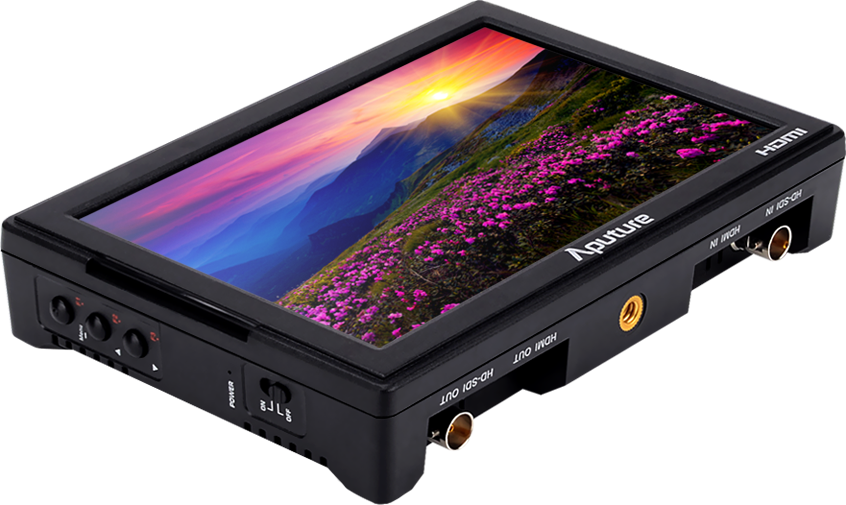
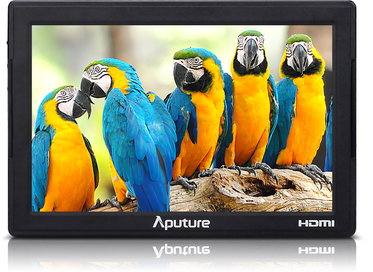
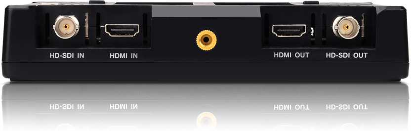
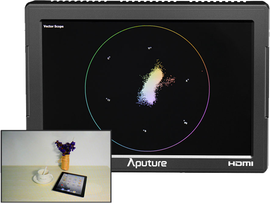
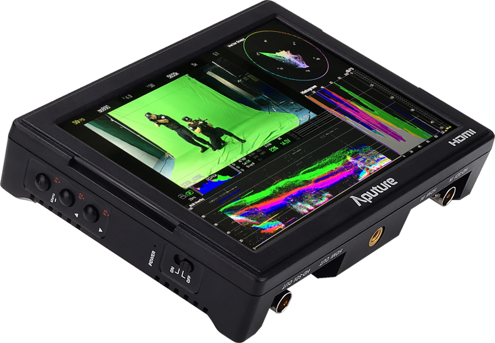
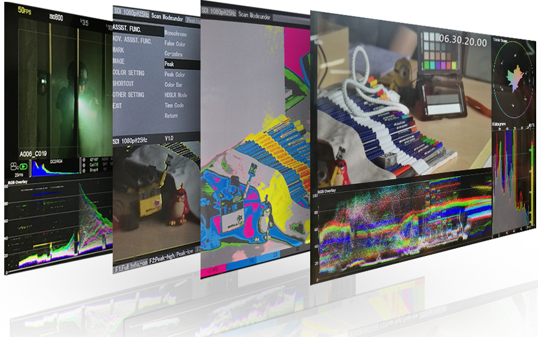
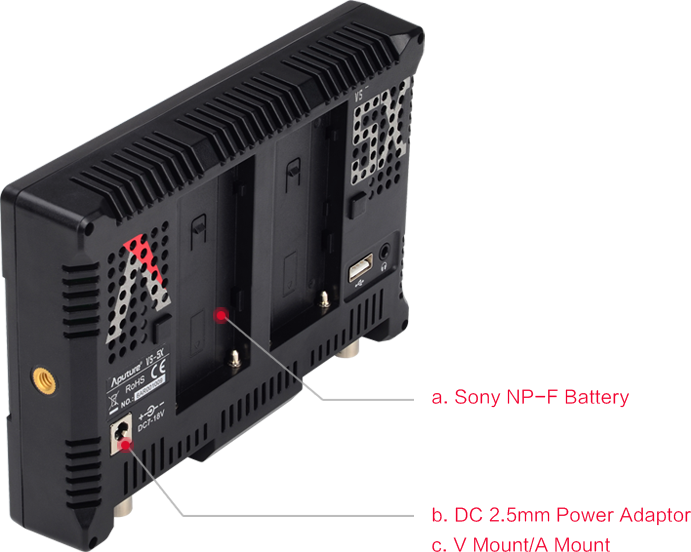
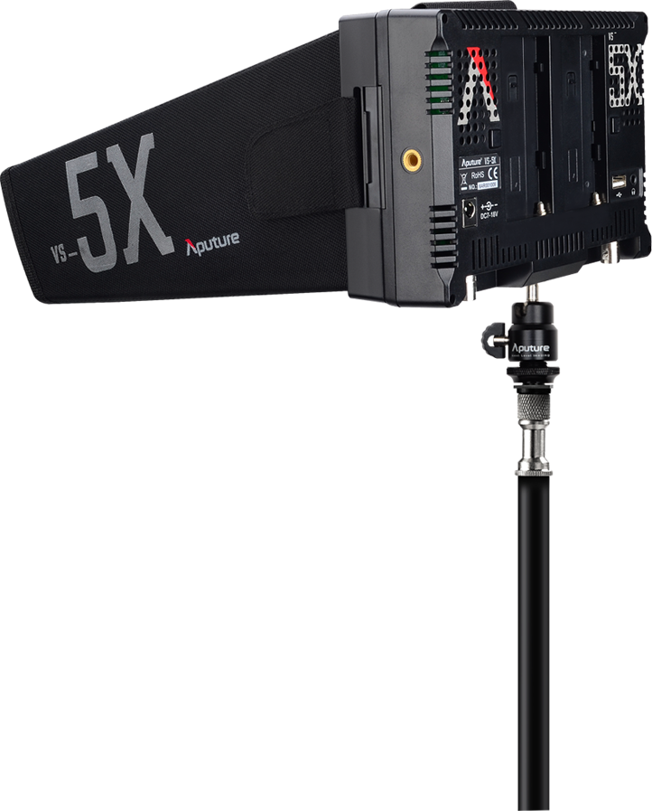

The VS-5X is a 7" field monitor with both HD-SDI & HDMI inputs and outputs , a 1920*1200 resolution, and a 160 degree viewing angle that makes it easy to monitor built-in functions such as waveform, vectorscope, RGB histogram, false color zebras and timecode. This powerful device enclosed in durable, yet sleek housing makes the VS-5X the optimal SDI monitor for any shooter or cinematographer.
Similar to the rest of the Aputure FineHD line of monitors, the VS-5X boasts a 1920 x 1200 resolution display, making every pixel of your image clear and crisp. The 160 degree viewing angle makes it easy to see from any perspective and the additional monitor space under the 7inch display allows for indicators, shortcuts, signal inputs and battery info to be seen without overlapping your picture.
Upgrated on VS-5, the option of an SDI/HDMI input and output are finally a part of the Aputure family. SDI maintains the quality of your footage and reliably transfers an HD signal in real time to your monitor. In addition to creating a more detailed monitoring experience, SDI allows for precision in your monitor assisting functions by processing the true data of your image. For those with cameras that cannot support SDI, HDMI is still available in the VS-5X as well.
RGB waveform is the newest addition to the V-Screen's list of professional assisting functions and includes two ways of displaying the data of your image: RGB parade and RGB overlay. Regardless of which you choose, waveform can help you find the pixel-to-pixel color values of your image and the balance of the three colors, it’s easier to calibrate the image white balance., and avoid different effects in different display.
Vectorscope is what colorists use to measure the hue and saturation of all of the colors in an image. Now since this powerful tool is available in the VS-5X, you as the shooter now have the same understanding and control of your color while shooting.
To better monitor your color space, RGB Histogram is also an additional monitoring function added in the VS-5X. Vectorscope, RGB Parade, and RGB Histogram can also be displayed simultaneously to help gauge all the color values of your image in different scopes.
Besides monitoring color, the VS-5X also has Zebra, False Color, Peaking, Volume bar--all and SDI timecode functions that can be used to better monitor your production.
Same as VS-5, VS-5X has adopted a new dual battery system that can eject or mount batteries with the press of a button. Though it features two slots though, the VS-5X can be powered on a single battery as well. Lastly, a separate optional DC 2.5mm adapter or V/A mount batteries with an included D-type cable can also power the VS-5.
By combining a completely sealed frame with a light-absorbing fabric, the new VS-5X Sun Hood is the ultimate tool for shooting out doors. Even in a burning daylight or reflective day shooting outdoors, the VS-5's Sun Hood ensures that you can clearly see what is on the display.
Same as VS-5, flexible bag for the VS-5X when in transit. The mesh fabric protects the unit from scratches and slim design ensures portability. A USB flash drive is also included so you can easily update your firmware. We also include every kinds of HDMI cable you may need. The VS-5X is truly an all-in-one solution to start your professional monitoring experience.